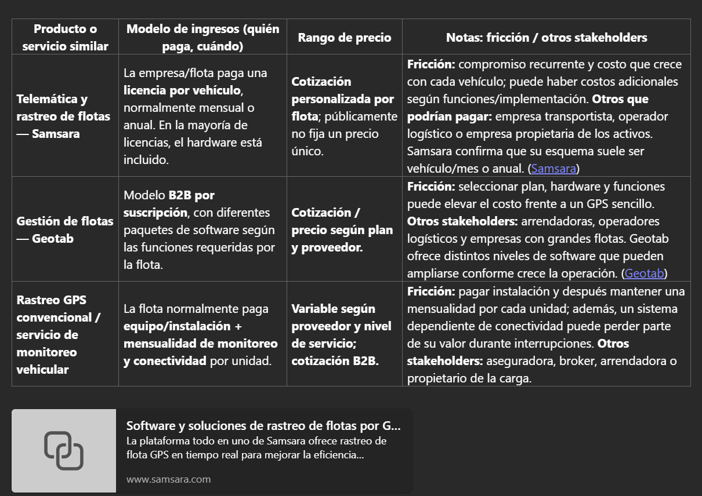

Semana 7 · Viabilidad técnica y económica¶
Objetivo de la semana¶
Responder si Nervik puede capturar valor y si la aritmética del negocio cierra: cómo cobran empresas con una oferta similar, cuánto cuesta construir el MVP de 10 unidades y dónde están los costos más fuertes.
| Pregunta de cierre | Estado |
|---|---|
| ¿Cuál es el costo unitario real a 10 unidades? | ✅ BOM ajustado de $1,531 MXN; con mejoras DFM, ≈ $867 MXN (ver revisión DFM) |
| ¿Qué modelo de ingresos elegimos? | ✅ Hardware + suscripción, con la aseguradora como posible co-comprador |
| ¿Cuánto cuesta mensualmente la IA por usuario activo? | ✅ ≈ $5.30 MXN por unidad al mes (ver cálculo) |
| ¿El VPN a 12 meses es positivo? | ❌ No: −$509,903 MXN. Se vuelve positivo a los 24 meses (ver modelo) |
1. Benchmarking de modelos de ingresos¶
Investigamos tres empresas con una oferta similar a la de Nervik: dos plataformas de telemática y un servicio de custodia física.
| Empresa | Qué ofrece | Modelo de ingresos | Rango de precio |
|---|---|---|---|
| Motive (antes KeepTruckin) | Telemática y video con IA para flotas: GPS, cámaras con análisis del conductor, detección de incidentes e inmovilización remota en algunos mercados | Hardware incluido en contrato + SaaS por vehículo/mes con add-ons. Contrato mínimo anual | Sin precio público en México; ≈ USD 35 por vehículo/mes en flotas pequeñas |
| Geotab | Plataforma de telemática basada en el dispositivo GO: rastreo, diagnóstico del motor, comportamiento del conductor e integraciones | Hardware vendido o en comodato + SaaS por vehículo/mes (GO Core / GO Plan). Contratos típicos de 3 años | Hardware USD 80–120; software USD 20–60 por vehículo/mes. En México lo fijan los revendedores |
| Detecta Security | Custodia armada de mercancía en tránsito con monitoreo satelital 24/7 | Cobro por servicio o por ruta según distancia, valor de la carga y riesgo | $8,000–$15,000 MXN por ruta metropolitana; $35,000–$45,000+ MXN interestatal de alto riesgo |
Momentos de fricción y otros stakeholders
Motive
- Precio no transparente: hay que hablar con ventas para cotizar.
- Contrato anual mínimo, sin prueba real en corredores de alto riesgo.
- Migrar de otro GPS implica recablear y capacitar al centro de monitoreo.
- Vende eficiencia y seguridad general; no queda claro si protege durante el bloqueo con jammer o solo documenta después.
- Otros stakeholders: aseguradoras, brokers de seguros y dueños de la carga (shippers).
Geotab
- Precio opaco y contrato de 3 años.
- Configuración compleja (hardware, sensores IOX, reglas de alerta) para flotas medianas sin personal técnico.
- Plataforma generalista: no resuelve la defensa autónoma sin conexión sin add-ons.
- Otros stakeholders: integradores de seguridad, aseguradoras y programas de cumplimiento.
Detecta Security
- El costo por viaje se acumula en flotas con muchas cargas diarias.
- El precio se negocia caso por caso, lo que complica el presupuesto.
- Coordinar custodios, horarios y protocolos agrega fricción operativa.
- Otros stakeholders: aseguradoras, brokers de carga, shippers y autoridades.
Benchmarking complementario¶

¿Qué modelo predomina y por qué?¶
Predomina hardware + SaaS por vehículo al mes con contrato anual o multianual (Motive y Geotab):
- Alineación con el activo: el riesgo está en cada tractocamión, así que cobrar por vehículo es fácil de entender y presupuestar.
- Recurrencia: el margen se construye sobre la suscripción, no sobre el hardware.
- Barrera de salida: una vez instalado y configurado, cambiar de proveedor cuesta.
- Escalabilidad comercial: "seguridad por camión al mes" se vende más fácil que "protección por viaje".
La custodia cobra por servicio porque su costo principal es humano y operativo en cada traslado.
Oportunidad: el stakeholder que no está pagando¶
Aseguradoras de carga como co-compradoras
Las aseguradoras (GNP, AIG, SURA, HDI, entre otras) exigen o recomiendan GPS, monitoreo y custodia, y absorben pérdidas que superan $7,000 millones de MXN al año. Sin embargo, ninguno de los tres modelos analizados las hace pagar por una capa de defensa autónoma sin conexión.
Proponemos que la aseguradora pague una cuota por póliza o por embarque por cada unidad equipada con Nervik, a cambio de:
- Menor siniestralidad en corredores de alto riesgo.
- Expedientes de siniestro con evidencia registrada durante el bloqueo.
- La posibilidad de ligar primas o deducibles al uso del dispositivo.
2. BOM del MVP (10 unidades)¶
Supuesto: MVP de 10 unidades funcionales, no un producto certificado. Precios en MXN.
| Componente | Referencia | Precio (MXN) | Proveedor sugerido |
|---|---|---|---|
| Microcontrolador | ESP32-S3-WROOM-1-N8R2 (Wi-Fi/BLE) | $199 | AG Electrónica |
| CAN Bus / OBD-II | MCP2515 + TJA1050 | $92 | Lionchip México |
| Detección RF / jammer | Módulo RF 315/433 MHz + antena (RSSI) | $85 | AliExpress / AG Electrónica |
| Respaldo LoRa | SX1276/SX1278 433/915 MHz | $180 | AliExpress / AG Electrónica |
| Memoria local | Flash SPI W25Q128JV 16 MB | $45 | Mouser / DigiKey |
| RTC | DS3231 + CR2032 | $60 | AG Electrónica / Steren |
| Regulación automotriz | Buck LM2596HV + LDO AMS1117 | $70 | AG Electrónica |
| Protección eléctrica | TVS SMBJ33A, PTC, Schottky, capacitores | $55 | AG Electrónica |
| Pasivos SMD | Resistencias, capacitores, cristal, JST | $90 | JLCPCB / Mouser |
| LEDs y buzzer | LED RGB, LED de estado, buzzer 85 dB | $35 | Steren |
| Conector OBD-II | 16 pines, grado automotriz | $120 | AliExpress |
| Antena LoRa | 433/915 MHz, U.FL/SMA | $70 | AliExpress |
| Respaldo de energía | CR2032 + supercapacitor 1 F | $45 | Steren |
| PCB 2 capas | JLCPCB, 80 × 60 mm | $95 | JLCPCB |
| Ensamble SMT | JLCPCB Economic PCBA | $180 | JLCPCB |
| Envío internacional | DHL/FedEx desde China | $250 | JLCPCB |
| Subtotal por unidad | $1,531 |
Igual al ajustado, más un módulo SIM800L para ráfaga SOS celular ($147) y su antena GSM ($60).
Subtotal por unidad: $1,810 MXN.
Por encima del objetivo
El objetivo era $800–$1,200 MXN por unidad. Aun sin GSM, el BOM queda en $1,531. Para bajarlo hay que quitar LoRa, usar una PCB más pequeña o un MCU más barato. La revisión DFM lo baja a ≈ $867 MXN.
3. Costos de desarrollo¶
| Rubro | Detalle | Costo (MXN) |
|---|---|---|
| Firmware embebido en C/C++ | Lectura CAN, GPIO, memoria, energía (300 h) | $150,000 |
| IA local (TinyML) | Edge Impulse / TensorFlow Lite Micro, dataset de jammers (200 h) | $100,000 |
| Cifrado local | Bitácora, firma de eventos, hash con mbedTLS (100 h) | $50,000 |
| Integración y pruebas | Pruebas en vehículo y ajuste de umbrales (150 h) | $75,000 |
| App móvil | Flutter o React Native, alertas y notificaciones | $180,000 |
| Cuentas de tiendas | Google Play (pago único) + Apple (anual) | $2,300 |
| Plataforma web B2B y dominio | Hosting, dominio, Supabase y Mapbox en plan gratuito | $3,600 |
Edge Impulse (plan Developer) y TensorFlow Lite Micro no tienen costo de licencia para un MVP de 10 unidades.
4. Resumen financiero del MVP¶
| Rubro | Por unidad (MXN) | 10 unidades (MXN) |
|---|---|---|
| Hardware ensamblado (BOM ajustado) | $1,531 | $15,310 |
| Carcasa y manufactura | $1,170 | $11,700 |
| Desarrollo embebido e IA local | — | $375,000 |
| App móvil y plataforma web | — | $185,900 |
| Total para arrancar el MVP | $587,910 |
Lectura
El costo del MVP lo dominan las horas de desarrollo de software (≈ 95 %), no el hardware.
5. Modelo financiero¶
Precio de venta: dos métodos¶
| Método | Cálculo | Resultado |
|---|---|---|
| Cost-plus | Costo unitario con DFM ($867) × 2 (margen de 52 %) = $1,734 | $1,800 MXN por unidad instalada |
| Value-based | Una sola ruta con custodia cuesta $8,000–$15,000; Motive cobra ≈ $600 MXN/mes. Nervik al año ($1,800 + 12 × $300 = $5,400) cuesta menos que una ruta con custodia y la mitad de una telemática completa | $300 MXN/mes por unidad (rango defendible: $300–$450) |
Ambos métodos coinciden con el precio objetivo de la PDS (C-03).
Supuestos¶
| Concepto | Valor |
|---|---|
| Desarrollo del MVP | $587,910 repartidos en los meses 1–6 |
| Inicio de ventas | Mes 7 (piloto de 10 unidades) |
| Unidades nuevas por mes | 10, 20, 30, 40, 50, 60 (meses 7–12); 32/mes (año 2); 40/mes (año 3) |
| Margen de hardware | $1,800 − $867 = $933 por unidad instalada |
| Costo variable mensual por unidad | $60: SIM IoT ($50), nube ($5) e IA ($5.30) |
| Costos fijos de operación | $45,000/mes desde el mes 7 (soporte, ventas, plataforma) |
| Tasa de descuento | 20 % anual (≈ 1.53 % mensual) |
Punto de equilibrio¶
Contribución mensual por unidad activa: $300 − $60 = $240.
Punto de equilibrio = $45,000 ÷ $240 ≈ 188 unidades activas. Se alcanza en el mes 12 (210 unidades).
Flujo de caja a 12 meses (MXN)¶
| Mes | Nuevas | Activas | Ingresos | Egresos | Flujo | Acumulado |
|---|---|---|---|---|---|---|
| 1–6 | 0 | 0 | 0 | 97,985/mes | −97,985/mes | −587,910 |
| 7 | 10 | 10 | 21,000 | 54,273 | −33,273 | −621,183 |
| 8 | 20 | 30 | 45,000 | 64,149 | −19,149 | −640,332 |
| 9 | 30 | 60 | 72,000 | 74,627 | −2,627 | −642,959 |
| 10 | 40 | 100 | 102,000 | 85,709 | 16,291 | −626,668 |
| 11 | 50 | 150 | 135,000 | 97,393 | 37,607 | −589,061 |
| 12 | 60 | 210 | 171,000 | 109,681 | 61,319 | −527,742 |
VPN y TIR¶
| Horizonte | VPN (20 % anual) | Acumulado |
|---|---|---|
| 12 meses | −$509,903 | −$527,742 |
| 24 meses | +$249,133 | +$492,921 |
| 36 meses | +$1,725,602 | +$2,857,319 |
- Primer mes con flujo positivo: mes 10.
- Recuperación de la inversión: mes 20.
- TIR a 36 meses: ≈ 8.2 % mensual (≈ 159 % anual), alta porque la inversión inicial es pequeña frente a la suscripción recurrente.
Lectura
A 12 meses el VPN es negativo: los primeros 6 meses son puro desarrollo. El negocio cierra en el año 2, siempre que se logre el ritmo de ventas y la hipótesis de pago se confirme en las entrevistas. Con la mitad de las ventas, la inversión se recuperaría hasta el mes 32 y el VPN a 24 meses sería de −$475,276.
6. Costo mensual de la IA¶
La detección corre en el dispositivo con TinyML, sin costo por uso. El costo de IA en la nube viene de la app: resúmenes, expedientes y consultas del centro de control con la API de Claude.
| Uso | Modelo | Llamadas por unidad al día | Tokens entrada / salida | Costo por unidad al mes |
|---|---|---|---|---|
| Resumen diario de la unidad | Claude Haiku 5.5 ($0.10 / $0.50 por millón) | 1 | 3,000 / 500 | $0.28 MXN |
| Expediente de evento (N2/N3) | Claude Sonnet 5.5 ($2 / $10 por millón) | 0.2 | 8,000 / 1,500 | $3.20 MXN |
| Consultas del centro de control | Claude Sonnet 5.5 | 0.25 | 4,000 / 600 | $1.81 MXN |
| Total | ≈ $5.30 MXN |
Tipo de cambio: $17.20 MXN/USD. Para una flota de 40 unidades, la IA cuesta ≈ $212 MXN al mes, menos del 2 % de lo que paga la flota de suscripción ($12,000).
Conclusión¶
Nervik puede capturar valor con el modelo que domina el mercado (hardware + suscripción), pero con un precio menor al de la telemática completa y muy por debajo de la custodia. El hardware no es el problema: el costo lo dominan las horas de desarrollo. El VPN es negativo a 12 meses y positivo a 24, así que la viabilidad depende de vender rápido después del piloto y de convertir a la aseguradora en un co-pagador.